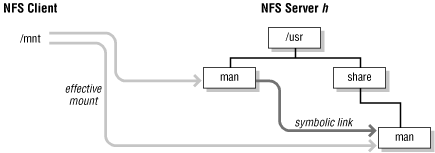

6.4. Symbolic links
Symbolic links are both useful and confusing
when used
with NFS-mounted filesystems. They can be used to "shape"
a filesystem arbitrarily, giving the system administrator freedom to
organize filesystems and pathnames in convenient ways. When used
badly, symbolic links have unexpected and unwanted side effects,
including poor performance and "missing" files or
directories. In this section, we'll discuss the many effects
that symbolic links can have on NFS.
Symbolic links differ from hard links in several ways, but the
salient distinction is that hard links duplicate directory entries,
while
symbolic links are new directory entries
of a special type. Using a hard link to a file is no different from
using the original file, but referencing a symbolic link requires
reading the link to find out where it points and then referencing
that file or directory. It is possible to create a loop of symbolic
links, but the kernel routines that read the links and build up
pathnames eventually return an error when too many links have been
traversed in a single pathname.
6.4.1. Resolving symbolic links in NFS
When an NFS client does
a
stat( ) of a
directory entry
and
finds it is a symbolic link, it issues an RPC call to read the link
(on the server) and determine where the link points. This is the
equivalent of doing a local
readlink( ) system
call to examine the contents of a symbolic link. The server returns a
pathname that is interpreted on the client, not on the server.
The pathname may point to a directory that the client has mounted, or
it may not make sense on the client. If you uncover a link that was
made on the server that points to a filesystem not exported from the
server, you will have either trouble or confusion if you resolve the
link. If the link accidentally points to a valid file or directory on
the client, the results are often unpredictable and sometimes
unwanted. If the link points to something nonexistent on the client,
an attempt to use it produces an error.
An example here helps explain how links can point in unwanted
directions. Let's say that you install a new publishing
package,
marker, in the
tools filesystem on an NFS server. Once
it's loaded, you realize that you need to free some space on
the
/tools filesystem, so you move the font
directory used by
marker to the
/usr filesystem, and make a symbolic link to
redirect the
fonts subdirectory to its new
location:
# mkdir /usr/marker
# cd /tools/marker
# tar cf - fonts | ( cd /usr/marker; tar xbBfp 20 - )
# rm -rf fonts
# ln -s /usr/marker/fonts fonts
The
tar command copies the entire directory tree
from the current directory to
/usr/marker (see
the manpage for
tar(1) for a more detailed
explanation).
On the server, the redirection imposed by the symbolic link is
invisible to users. However, an NFS client that mounts
/tools/marker and tries to use it will be in for
a surprise when the client tries to find the
fonts subdirectory. The client looks at
/tools/marker/fonts, realizes that it's a
symbolic link, and asks the NFS server to read the link. The NFS
server returns the link's target --
/usr/marker/fonts -- and the client tries
to open this directory instead. On the client, however, this
directory
does not exist. It was created for
convenience on the server, but breaks the NFS clients that use it. To
fix this problem, you must create the same symbolic link on all of
the clients, and ensure that the clients can locate the target of the
link.
Think of symbolic links as you would files on an NFS server. The
server does not interpret the contents of files, nor does it do
anything with the contents of a link except pass it back to the user
process that issued the
readlink RPC. Symbolic
links are treated as if they existed on the local host, and they are
interpreted relative
to the client's filesystem
hierarchy.
6.4.2. Absolute and relative pathnames
Symbolic links can point to an
absolute pathname (one beginning
with
/ ) or a pathname relative to the
link's path. Relative symbolic link targets are resolved
relative to the place at which the link appears in the client's
filesystem, not the server's, so it is possible for a relative
link to point at a nonexistent file or directory on the client.
Consider this server for
/usr/local:
% cd /usr/local/bin
% ls -l
total 1
lrwxrwxrwx 1 root bin 16 Jun 8 1990 a2ps -> ../bin.mips/a2ps
lrwxrwxrwx 1 root bin 12 Jun 8 1990 mp -> ../bin.mips/mp
If you mount just
/usr/local/bin from this
server, you will not be able to use any of the executables in it
unless you have them in the directory
/usr/local/bin.mips.
Using symbolic links to reduce the number of directories in a
pathname is beneficial only if users are not tempted to
cd from one link to another:
# ln -s /minnow/fred /u/fred
# ln -s /alewife/lucy /u/lucy
The unsuspecting user tries to use the path-compressed names, but
finds that relative pathnames aren't relative to the link
directory:
% cd /u/fred
% cd ../lucy
../lucy: No such file or directory
A user may be bewildered by this behavior. According to the
/u directory,
fred and
lucy are subdirectories of a common parent. In
reality, they aren't. The symbolic links hide the real
locations of the
fred and
lucy directories, which do not have a common
parent. Using symbolic links to shorten pathnames in this fashion is
not always the most efficient solution to the problem; NFS mounts can
often be used to produce the
same filesystem naming conventions.
6.4.3. Mount points, exports, and links
Symbolic links have strange effects on mounting
and exporting filesystems. A good general
rule to remember is that filesystem operations apply to the target of
a link, not to the link itself. The symbolic link is just a pointer
to the real operand.
If you mount a filesystem on a symbolic link, the actual mount occurs
on the directory pointed to by the link. The following sequence of
operations produces the same net result:
# mkdir -p /users/hal
# ln -s /users/hal /usr/hal
# mount bitatron:/export/home/hal /usr/hal
as this sequence does:
# mkdir -p /users/hal
# mount bitatron:/export/home/hal /users/hal
# ln -s /users/hal /usr/hal
The filesystem is mounted on the directory
/users/hal and the symbolic link
/usr/hal has the mount point as its target. You
should make sure that the directory pointed to by the link is on a
filesystem that is mounted read/write and that performing the mount
will not obscure any required filesystem underneath the symbolic link
target.
Exporting a symbolic link from a server follows similar rules. The
filesystem or subtree of a filesystem that is really exported is the
one pointed to by the symbolic link. If the parent of the
link's target has already been exported, or a subtree of it is
exported, the attempt to export the link fails.
More interesting than exporting a symbolic link is mounting one from
the server. Mounting a link from a server is not the same thing as
mounting a filesystem containing a symbolic link. The latter means
that there is a symbolic link somewhere in the filesystem mounted
using NFS. The former case implies that the server pathname used to
locate the remote filesystem is a link and directs the mount
somewhere else. The client mounts the directory pointed to by the
link. As shown in
Figure 6-1, if
/usr/man is a symbolic link to
/usr/share/man, then this
mount command:
# mount bitatron:/usr/share/man /mnt
does the same thing as this mount command:
# mount bitatron:/usr/man /mnt

Figure 6-1. Mounting a server's symbolic link
A potential problem arises if the symbolic link and the directory it
points to are on different filesystems: it's possible that the
server has exported the link's filesystem but not the
filesystem containing the link's target. In this example,
/usr/man and
/usr/share/man
could be in two distinct filesystems, which would require
two
entries in the
server's
dfstab file.
 |  |  |
| 6.3. Mounting filesystems |  | 6.5. Replication |